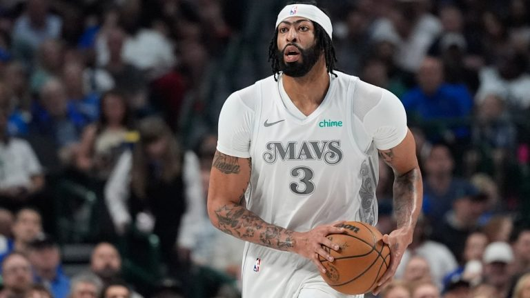

Anthony Davis
Anthony Marshon Davis Jr. (Chicago, 11 de março de 1993) é um basquetebolista estadunidense que atua como ala-pivô ou pivô. Atualmente defende o Dallas Mavericks na NBA. Davis se destacou no basquete universitário da NCAA jogando pelo Kentucky Wildcats e foi posteriormente selecionado na primeira posição no draft da NBA de 2012, passando a integrar o elenco do New Orleans Pelicans.
New Orleans Pelicans
Anthony Davis: Resumo da Carreira Ano a Ano
* 2012-13 (New Orleans Hornets): Draftado como a primeira escolha geral, Davis teve uma temporada de estreia sólida, com médias de 13,5 pontos, 8,2 rebotes e 1,8 bloqueios. Foi nomeado para o NBA All-Rookie First Team.
* 2013-14 (New Orleans Pelicans): Com a mudança do nome da equipe para Pelicans, Davis melhorou suas estatísticas, registrando 20,8 pontos, 10 rebotes e 2,8 bloqueios por jogo. Ele se tornou um All-Star pela primeira vez.
* 2014-15 (New Orleans Pelicans): Participou de sua primeira pós-temporada, mas os Pelicans foram eliminados na primeira rodada. Davis teve uma média de 24,4 pontos e 10,2 rebotes.
* 2015-16 (New Orleans Pelicans): Apesar de uma lesão que o afastou por parte da temporada, ele teve um desempenho notável com um recorde de carreira de 59 pontos em um jogo.
* 2016-17 (New Orleans Pelicans): Teve uma temporada de destaque com médias de 28 pontos e 11,8 rebotes. Os Pelicans não chegaram aos playoffs.
* 2017-18 (New Orleans Pelicans): Davis levou os Pelicans à segunda rodada dos playoffs, onde foram eliminados pelos Golden State Warriors. Ele teve médias de 30,0 pontos e 12,4 rebotes durante os playoffs.
* 2018-19 (New Orleans Pelicans): Solicitou uma troca e foi trocado para os Los Angeles Lakers após a temporada. Ele teve médias de 25,9 pontos e 12 rebotes.
Los Angeles Lakers
* 2019-20 (Los Angeles Lakers): Em sua primeira temporada com os Lakers, ajudou a equipe a conquistar o campeonato da NBA, com médias de 25 pontos e 10,7 rebotes nas finais.
* 2020-21 (Los Angeles Lakers): Enfrentou lesões que limitaram seu tempo em quadra. Os Lakers foram eliminados na primeira rodada dos playoffs.
* 2021-22 (Los Angeles Lakers): Continuou lidando com lesões, mas teve médias de 23,2 pontos e 9,9 rebotes durante a temporada regular.
* 2022-23 (Los Angeles Lakers): Atingiu médias de 25,9 pontos e ajudou os Lakers a chegar às finais da Conferência Oeste, onde foram varridos pelos Denver Nuggets.
* 2023-24 (Los Angeles Lakers): Assinou uma extensão contratual de três anos. Teve um desempenho sólido durante a temporada regular.
Dallas Mavericks
* 2024-25 (Los Angeles Lakers e Dallas Mavericks): Em fevereiro de 2025, foi trocado para o Dallas Mavericks em uma negociação surpreendente que envolveu Luka Dončić.
AD Highlighs
Entre em Contato
Dallas Mavericks

Estatísticas da Carreira
PTS
24.1
REB
10.6
AST
2.5
STL
1.3
BLK
2.3
Premiações e títulos
Campeão da NBA: 2020
Campeão da Copa NBA: 2023
NBA All-Star Game MVP: 201710x NBA All-Star: 2014–2025
5x All-NBA Team (Primeiro e Segundo Time)
5x NBA All-Defensive Team (Primeiro e Segundo Time)
NBA All-Rookie Team: 2013
3x Líder em Tocos da NBA: 2014, 2015, 2018
Um dos 75 maiores jogadores da história da NBA
**Seleção dos Estados Unidos:**
Ouro Olímpico 2012
Ouro no Mundial 2014